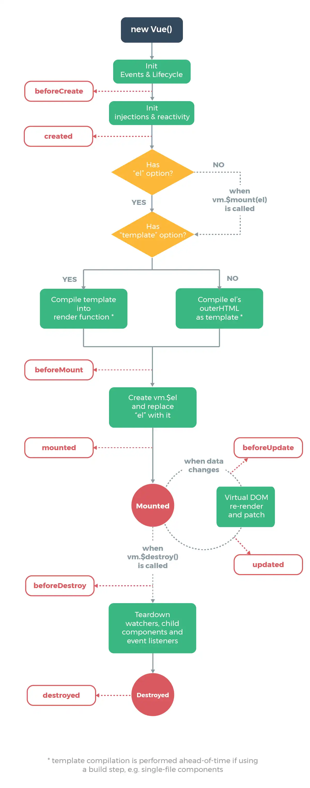

前言
框架是什麼?為什麼要用它?
在大型資料網站中直接使用HTML、JS顯示畫面及控制功能等時會因為龐大的分支頁導致維護困難及成本直線上升，例如有一萬個頁面需要更改其中一個共通佈局點時有可能要將這一萬個頁面的資料一個一個更改，這是一個非常耗時間及做無意義事的成本，因此使用JavaScript框架可以有效解決這些問題。
目前JavaScript三個主流框架分別為Angular、React、Vue，本篇只針對Vue進行介紹，由於Vue有學習曲線低、輕量型等優點只要對HTML、CSS、JS有基礎認知幾乎都能在短時間內對Vue上手，相較於其他兩個框架Vue的入門門檻非常的低。
框架的優勢
目前三大框架的運作原理都是由資料驅動畫面，開發人員只要透過修改資料就可以讓框架自動將畫面做變更，聽起來很神奇對吧?開始使用框架前需要了解MVC以及MVVM架構。
MVC，M全名Model指資料處理、處理邏輯的部分。
V全名View指管理畫面顯示的部分。
C全名Controller指負責處理使用者與系統端的互動應用。
MVVM，這邊與MVC相比只有VM不同，VM全名ViewModel是負責資料與畫面綁定做呈現的部分，根據官方文件說明Vue不完全是一個MVVM架構，但Vue的部分設計是受到它的啟發。
使用框架前我要準備什麼?
進入框架前請先確保已經對HTML、CSS、JS有基本了解，在Vue內需避免直接針對DOM的行為應該讓框架進行負責也符合框架設計的初衷。
使用Vue前必須先進行導入檔案，根據官方文件的解說可以使用以下的方式導入Vue
-
<script src="https://cdn.jsdelivr.net/npm/vue@2.6.14/dist/vue.js"></script> -
npm install -g @vue/cli
使用cdn的方式導入Vue檔案或者使用Vue CLI的方式進行安裝
使用npm指令前須先安裝node環境
Vue的完整運作流程
根據官方製作的圖片Vue的生命週期如下
看不懂嗎?沒關係，在入門時只要知道Vue是這樣再進行流程就可以了，而我們在Vue所做的一切動作都是遵循著這張圖的流程再進行，更詳細的說明可以參考Alex ReVue重頭說起。
建立Vue及綁定
本篇只針對Vue做簡單介紹，以下功能皆採用src的方式使用Vue，版本為2.6.14
在使用Vue之前必須先建立一個Vue實體以及告訴Vue負責的區域，特別注意如果再負責區域以外的地方使用Vue是無效的
-
<div id="app"> </div> <script> new Vue({ el:'#app' }) </script> -
<script> new Vue({ el:'#app', data:{ //存放資料的位置 }, computed:{ //這裡會有計算出一個結果的函式 計算結束會return一個值 資料無異動時將不會自動執行 //使用時機:需要將顯示資料進行邏輯運算時會使用 }, methods: { //與computed類似 這裡會有控制功能、事件處理的函式 只要呼叫就會執行 //使用時機:與JS中的function一樣建立函式後透過監聽或其他方式觸發會使用 }, mounted() { //根據生命週期圖表示當Vue的實體與el掛載完成後就會執行 //通常放網頁載入完畢後會立刻執行的函式功能如使用fetch、axios等方式獲取api數據載入至網頁 }, }) </script>
以上，就建立了Vue以及將負責區域綁定在#app裡了，一般使用Vue時會處理眾多資料因此以下是個人會使用的Vue起手式
似乎開始複雜了對嗎?在入門時使用這四種Vue的功能就可以做出非常多的東西如串接API資料渲染至畫面、讓使用者輸入文字或選擇選項顯示不同的資料等等的應用，而且實現非常簡單，因為Vue幫我們處理了綁定資料及渲染等許多雜事，而我們只要將拿出資料以及告知Vue要在哪裡呈現就可以做到資料驅動的動作。
Vue的實際應用
說了許多，以下正式開始Vue的實際應用範例，與此同時可以參考DCloud Vue範例，特別注意在Vue2中呼叫Vue的功能或資料時前面需要加上this.，這裡的this是指向Vue的本體。
-
<div id="app"> <button v-on:click="btn(true)">顯示</button> <button @click="btn(false)">隱藏</button> <div v-show="show">{{showData}}</div> <div>{{presetData}}</div> <input type="text" v-model="userInput" placeholder="嘗試更改我"> <div>:{{userInput}}</div> <input type="text" v-model="userInput2" @keyup.enter="showUserData2" placeholder="更改我之後按下Enter"> <div v-show="show2">{{viewInput2}}</div> <div> 陣列顯示的資料: <span v-for="item in groupName"> {{item}} </span> </div> </div> <script> new Vue({ el:'#app', data:{ presetData:'我是一筆預設資料，來源是presetData', userInput:'', userInput2:'', viewInput2:'', showData:'我顯示了', show:false, show2:false, groupName:['小美','瑪琳','小露','大山'], }, computed:{ showInput2(){ return `${this.userInput2} computed` }, }, methods:{ btn:function(term){ this.show = term }, showUserData2(){ this.viewInput2 = this.showInput2 this.show2 = true }, }, }) </script>
{{showData}}
{{presetData}}
:{{userInput}}
{{viewInput2}}
陣列顯示的資料:
{{item}}
以上是最常見的使用包含click監聽、show條件顯示、v-Model雙向綁定、{{}}單向顯示資料、keyup鍵盤操作事件、for in迴圈，其中v-on:click的縮寫是@click
更多如v-bind、v-html等應用參考官方文件